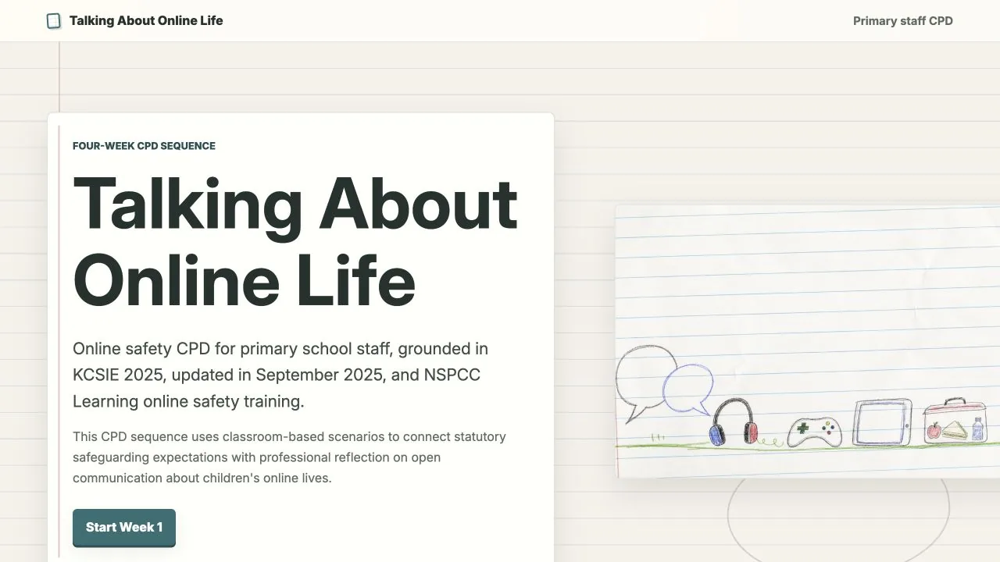
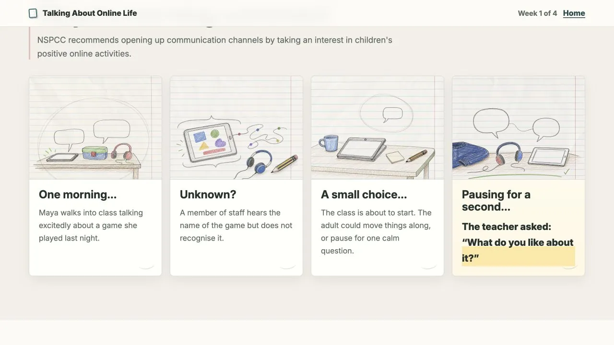
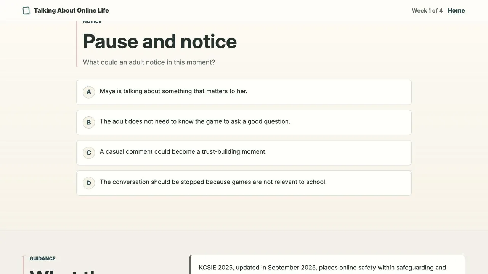
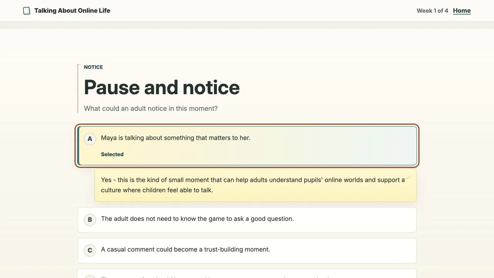
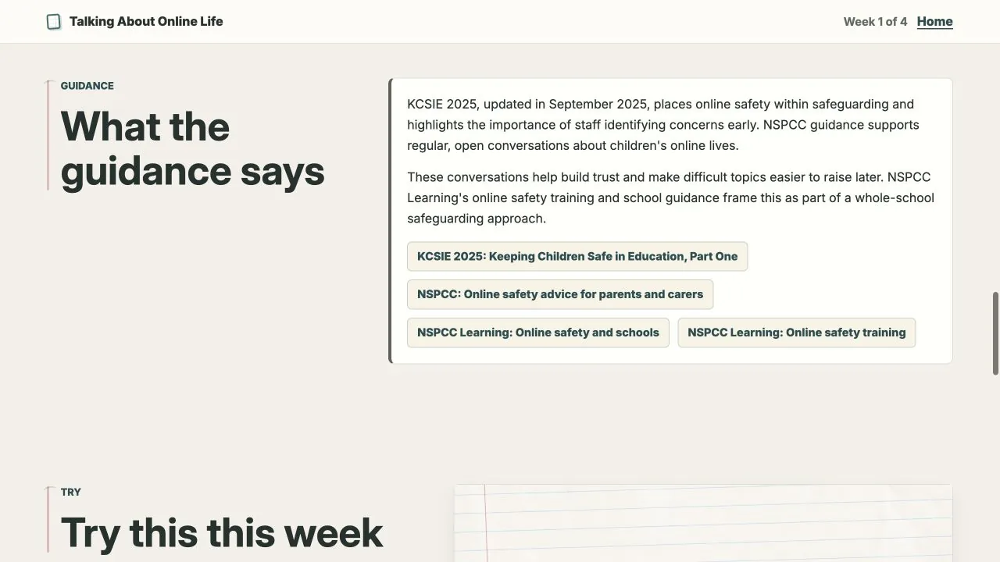
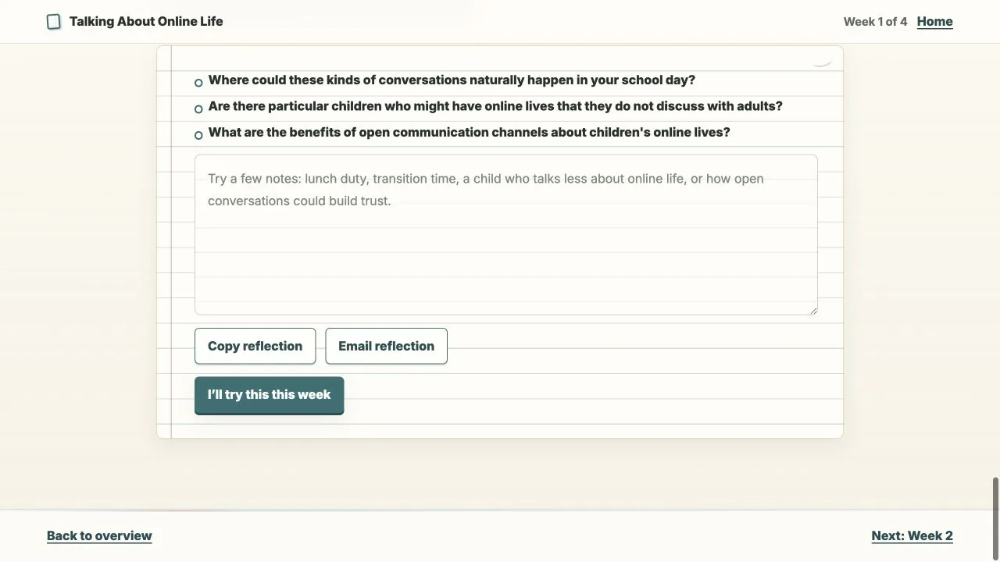
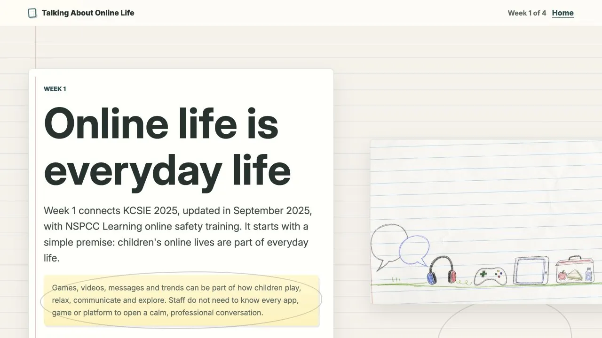
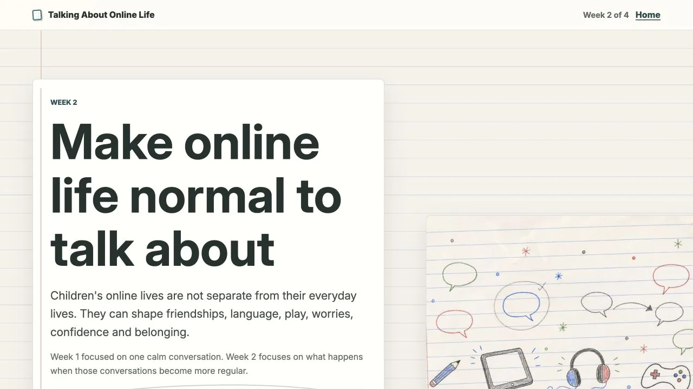
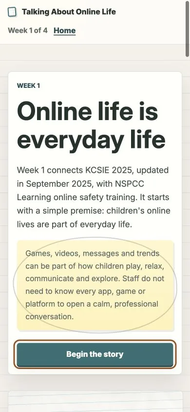

Talking About Online Life
Designing a microlearning experience that makes online safety part of everyday safeguarding practice.

Online-safety training often concentrates on platforms, risks and formal reporting. I designed this short digital CPD sequence around a different question: how can primary-school staff make children’s online lives easier to talk about before a concern becomes a disclosure?
The experience turns safeguarding guidance into repeated stories, choices and small actions that can fit into ordinary school practice.
The overview and Weeks 1 and 2 are live. Weeks 3 and 4 remain in development.
The challenge: make online life easier to discuss
The core problem was not a lack of online-safety resources. Online life could still feel like a specialist, technical or compliance subject, separate from everyday safeguarding conversations. Staff might assume they need to understand every platform before they can respond usefully.
The intervention therefore needed to make the subject ordinary enough to discuss, serious enough to connect to safeguarding responsibilities and small enough to fit existing workload. Curiosity opens communication; it does not replace reporting procedures or professional judgement.
Four strategic decisions
Reframe online safety as everyday safeguarding
Games, videos and messages become familiar conversation starters rather than a test of platform expertise.
Use microlearning instead of one-off training
Short weekly practice moments reduce the initial burden and allow one behaviour to build through repetition.
Repeat a stable learning pattern
Every week moves from a recognisable story to interpretation, guidance, one action and private reflection.
Measure the experience cautiously
Page, section and interaction identifiers can show where attention drops without presenting engagement as behaviour change.
Story → Notice → Guidance → Try → Reflect
The central model establishes relevance before presenting policy. A short classroom story gives staff something concrete to interpret; selectable options make assumptions visible; concise guidance then connects the moment to safeguarding responsibilities. The sequence finishes with one low-pressure action and a private reflection.
- Story
- Notice
- Guidance
- Try
- Reflect

{kind=link}

{kind=link}

{kind=link}

{kind=link}

A reusable visual and interaction system
The exercise-book visual language connects the CPD to classroom practice rather than corporate compliance training. Warm paper tones, ruled pages and childlike illustrations keep the tone calm and reflective. The same structure supports different scenarios and learning objectives across Weeks 1 and 2.
{kind=link}

{kind=link}

Accessible delivery and privacy-conscious measurement
The live experience uses semantic headings, a skip link, labelled controls, visible keyboard focus, responsive single-column layouts, pressed states and polite announcements for dynamic feedback. Short sections, concrete language and a repeated pattern also reduce the effort required to interpret sensitive guidance. These are implemented decisions, not a claim of formal WCAG conformance.
The static site requires no staff account. Its current Google Analytics setup uses week and page identifiers alongside stable section and button labels. Those events can support aggregate reporting, but the implementation should not be described as fully anonymous until consent, retention and platform-generated identifiers have received a privacy review.
{kind=link}

Current measurement events
- Week and page viewed
- Section reached
- Option selected
- Reflection action
Aggregate reporting
Outcome, limitations and next steps
The current result is a functioning microlearning system with an overview and two complete weekly experiences. It demonstrates how policy-led content can become stories, decisions and small professional actions; it is not yet a completed four-week programme.
The next step is to complete and test Weeks 3 and 4, examine where staff hesitate across the repeated sequence and conduct short interviews about relevance, tone and likelihood of trying the action. The live build references KCSIE 2025 and Ofcom 2024 data, so guidance and contextual statistics also require dated review before wider deployment.